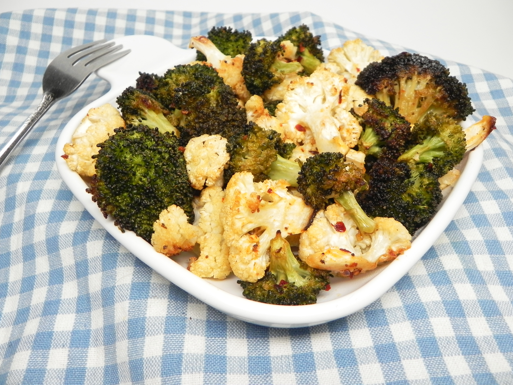

Roasting cauliflower transforms this veggie from crunchy crudité bite into a satisfying side. Its natural bitterness mellows in the oven, and it's neutral enough to take on the flavor of whatever you cook it with. We've rounded up 15 roasted cauliflower recipes that represent some of the different ways you can cook cauliflower in the oven, including whole roasted cauliflower, roasted cauliflower steaks, Parmesan roasted cauliflower, curry roasted cauliflower, roasted buffalo cauliflower, s picy roasted cauliflower, and more. our collection of top-rated meatball recipes has you covered. From Mexican albondigas to Scandinavian meatballs, from Greek- to Asian-inspired variations, these creative meatball recipes span the globe!
Simple roasted broccoli and cauliflower seasoned with lemon-pepper that pairs nicely with steak, chicken, fish, or pork.